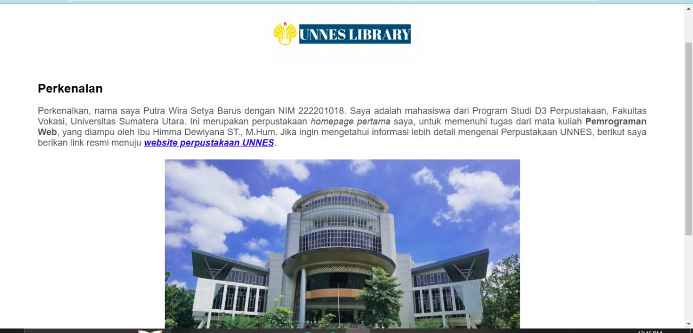

Perpustakaan Mitra

Perpustakaan putrabaruslib
Perpustakaan putra barus adalah perpustakaan digital.
Kunjungi WebsitePerpustakaan Universitas Indonesia
Perpustakaan UI menyediakan berbagai koleksi digital dan fisik untuk mendukung kegiatan akademik dan penelitian.
Kunjungi WebsiteMedia vidio dan audio

Dj Ular Engkol
Video Tour Perpustakaan
Kelebihan HTML5 dalam Pengembangan Web Modern
HTML5 hadir dengan berbagai peningkatan signifikan dibandingkan versi HTML sebelumnya. Dalam website perpustakaan digital ini, kami memanfaatkan beberapa fitur unggulan HTML5:
- Semantic Elements: Penggunaan tag seperti <header>, <nav>, <main>, <section>, dan <footer> membuat struktur website lebih terorganisir dan mudah dipahami.
- Native Multimedia Support: Tag <audio> dan <video> memungkinkan pemutaran media tanpa plugin tambahan, seperti yang diterapkan pada bagian audio DJ Ular Engkol dan video tour perpustakaan.
- Responsive Design: Dengan meta viewport dan CSS3, website kami dapat menyesuaikan tampilan di berbagai ukuran layar perangkat.
- Form Validation: HTML5 menyediakan validasi form bawaan seperti required, email, dan number, meningkatkan interaksi pengguna tanpa JavaScript tambahan.
- Better Accessibility: Penggunaan ARIA roles dan semantic elements meningkatkan aksesibilitas website bagi pengguna dengan keterbatasan.